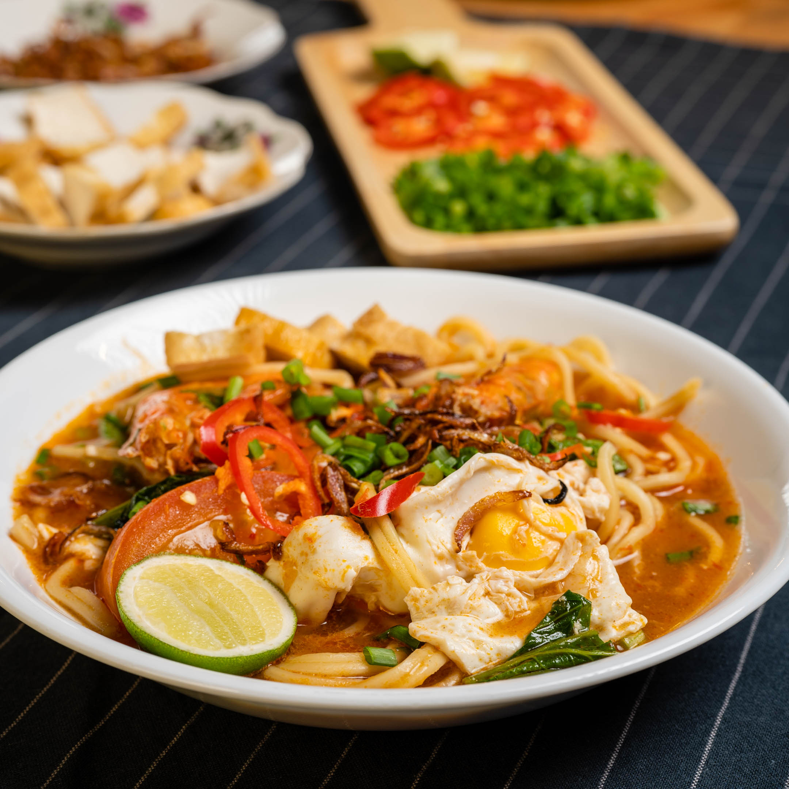

Mee bandung is a Malay noodle dish that originated in Muar. The dish combines yellow noodles with a thick, spicy sauce that consists of chilies, onions, shrimp paste, and dried shrimps. Each mee bandung is topped with a variety of condiments that typically include halved boiled eggs, shrimps, fishcakes, vegetables, and occasionally beef, while the dish is best finished off with a splash of lime juice. The term bandung roughly translates as mixed or paired and is not related to a namesake Indonesian city.
Meal prep time : 35 minutes
Servings : 1